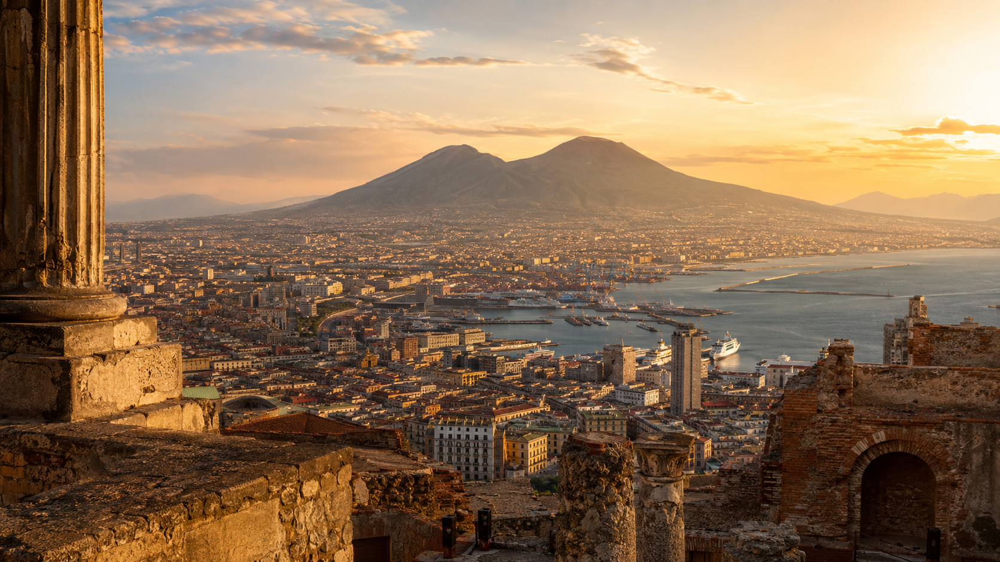
Free walking tour
A cidade antes dos monumentos
Comece pelas ruas, praças e igrejas. O tour ajuda a entender por que Nápoles parece caótica e, ao mesmo tempo, tão coerente.
Uma viagem entre cidades enterradas, túneis milenares, castelos, ilhas mediterrâneas e a cozinha que transformou Nápoles em linguagem universal.
“Nápoles não foi feita para ser admirada à distância. Ela precisa ser atravessada.”
A cidade é intensa, contraditória e profundamente humana. O mesmo território reúne arte barroca, engenharia romana, um vulcão ativo, bairros populares e receitas que conquistaram o mundo.
O segredo não é tentar torná-la organizada. É compreender suas camadas.
Nápoles funciona como base. Pompeia e Herculano ficam na direção do Vesúvio; Pozzuoli está a oeste; Caserta e Cápua, ao norte; Capri aparece no Golfo como passeio de dia inteiro. Em dois dias, priorize Nápoles e uma área arqueológica. Com três ou quatro dias, a viagem ganha profundidade.
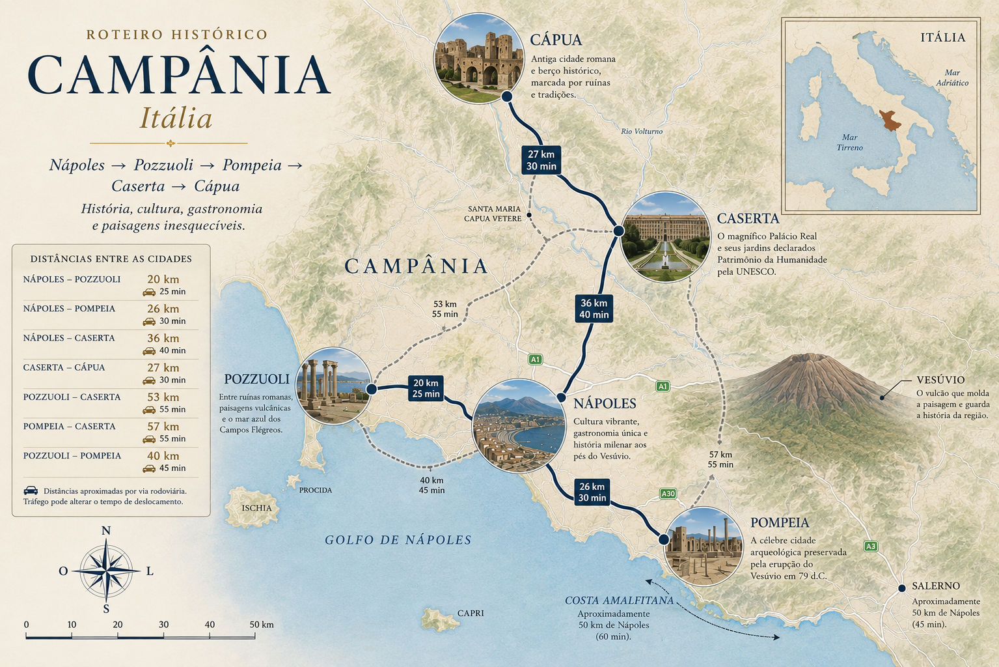
O free walking tour dá contexto à cidade; a Cappella Sansevero e o subterrâneo mostram que a experiência mais forte acontece quando se atravessa a superfície.

Comece pelas ruas, praças e igrejas. O tour ajuda a entender por que Nápoles parece caótica e, ao mesmo tempo, tão coerente.
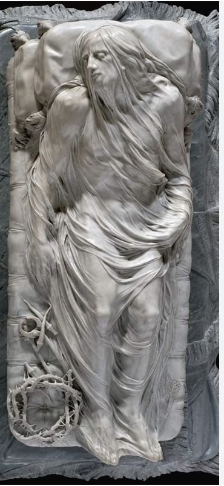
No Cristo Velado, a delicadeza do tecido esculpido desafia a percepção. A visita é curta e costuma exigir reserva.
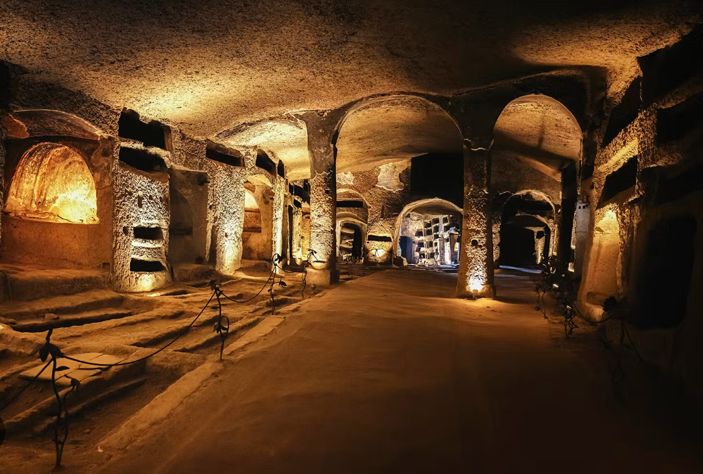
Túneis gregos, aquedutos romanos e abrigos de guerra revelam como cada época reutilizou a mesma pedra vulcânica.
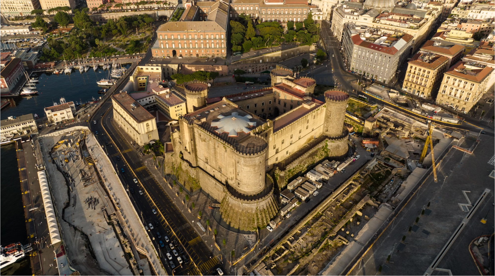
A vista aérea revela por que o Maschio Angioino é uma das imagens mais fortes de Nápoles: muralhas, torres e o porto reunidos no coração da cidade.
O castelo mais estratégico para o roteiro. Fica em Municipio, diante do Molo Beverello. Mesmo quem não entrar deve passar por ali para ver as torres e o arco triunfal de mármore.
Funciona bem no mesmo dia do centro histórico, de Toledo, da Piazza del Plebiscito e do Lungomare. No fim da tarde, rende uma boa ligação visual com o porto e com Capri.
Reserve de 30 minutos a 1 hora para o exterior e a praça; mais tempo se quiser visitar com calma a parte interna e combinar com a região de Santa Lucia.
A Campânia não oferece apenas ruínas. Ela permite caminhar dentro das engrenagens que construíram o mundo mediterrâneo.
Pompeia não é um conjunto de pedras isoladas. É uma cidade inteira: ruas, termas, casas, afrescos, comércio e espaços de espetáculo preservados pela erupção de 79 d.C.
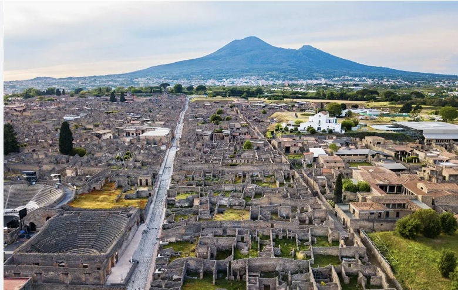
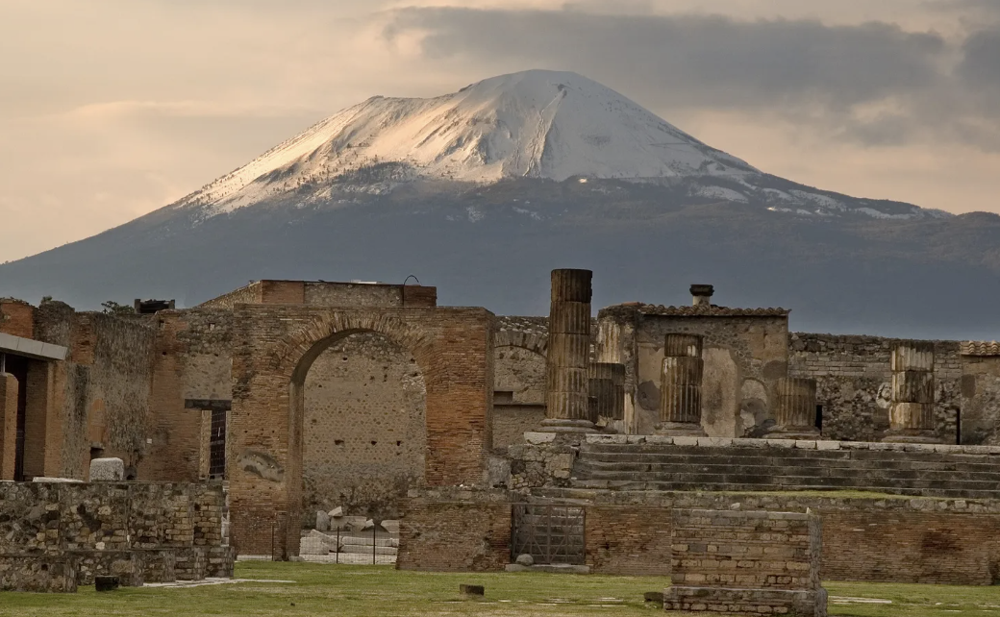

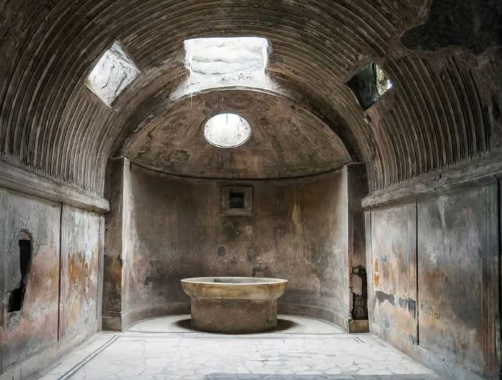

A erupção que interrompeu a vida urbana.
Uma visita confortável sem tentar ver tudo.
Menos calor e maior chance de percorrer áreas abertas.
Menor e mais concentrada do que Pompeia, Herculano oferece uma leitura íntima da vida romana. A preservação de casas, mosaicos, afrescos e elementos orgânicos faz dela uma experiência complementar, não repetitiva.
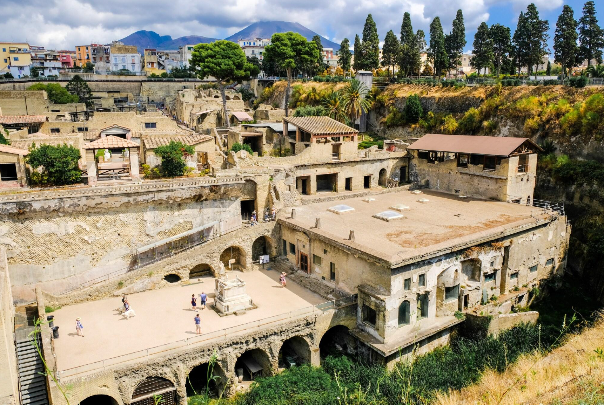
Herculano foi atingida pela mesma erupção de 79 d.C., mas o modo como os materiais vulcânicos cobriram a cidade preservou interiores e detalhes de maneira excepcional. É uma visita mais compacta e normalmente ocupa de duas a quatro horas.
Pegue a linha EAV/Circumvesuviana a partir de Napoli Garibaldi em direção a Sorrento e desça em Ercolano Scavi. Da estação até a entrada, a caminhada é curta.
Casas romanas, afrescos, mosaicos, antigas áreas residenciais e a leitura mais humana do sítio arqueológico. É uma boa escolha para quem quer ver detalhes, não só escala.
Leve água e proteção solar. Por ser menor, Herculano combina muito bem com uma tarde em Nápoles ou com a região do Lungomare.
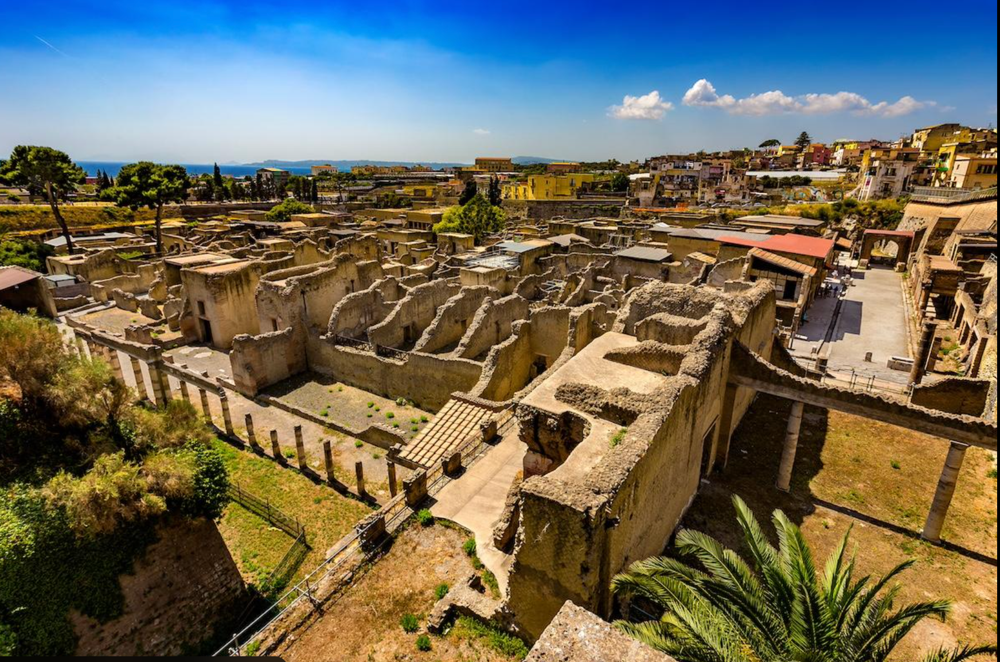
Casas romanas, afrescos, mosaicos, antigas áreas residenciais e a leitura mais humana do sítio arqueológico. É uma boa escolha para quem quer ver detalhes, não só escala.
Leve água e proteção solar. Por ser menor, Herculano combina muito bem com uma tarde em Nápoles ou com a região do Lungomare.
Capri não deve entrar como uma parada apressada entre outras atrações. Saindo cedo de Nápoles, ela funciona como um passeio de dia inteiro dedicado à paisagem, à navegação e às duas cidades da ilha.
O roteiro mais equilibrado combina uma volta de barco ou mirante para ver os Faraglioni, subida a Anacapri e tempo no centro de Capri. A Gruta Azul depende das condições do mar e não deve ser tratada como garantia.
Os hidrofólios rápidos partem principalmente do Molo Beverello, em Nápoles. O trajeto costuma levar cerca de 50 a 60 minutos, dependendo da embarcação e da operação do dia.
Como referência, o trecho simples costuma ficar em torno de €24–€30, e a ida e volta aproximadamente €48–€60 por pessoa. Os valores variam conforme temporada, horário e operadora.
Passeio de barco para ver os Faraglioni, centro de Capri com a Piazzetta e os Jardins de Augusto, e subida a Anacapri para Monte Solaro ou Villa San Michele.
Dica: no verão, compre o ferry cedo e não deixe para o último barco de volta. Mar e vento podem alterar a operação.
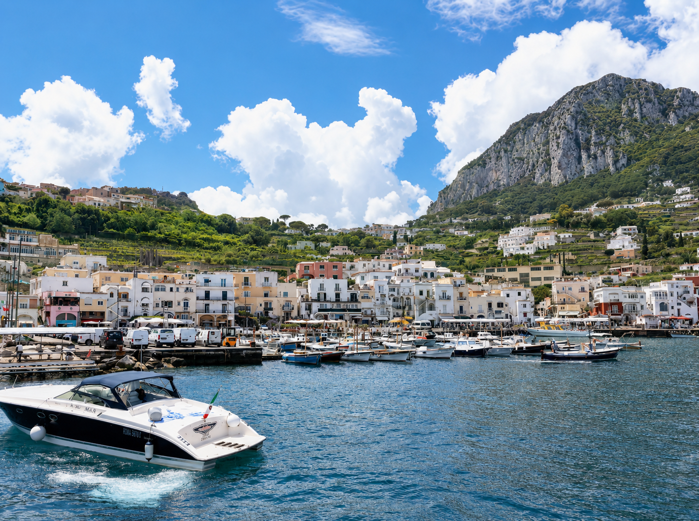
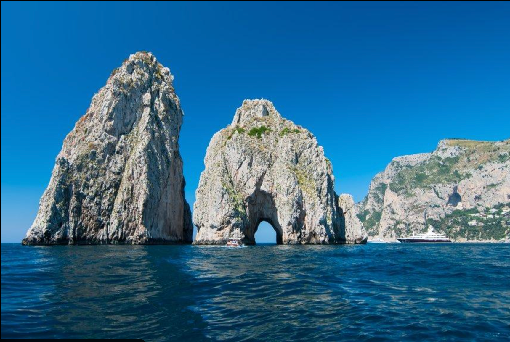
Passeio de barco para ver os Faraglioni, centro de Capri com a Piazzetta e os Jardins de Augusto, e subida a Anacapri para Monte Solaro ou Villa San Michele.
Nem todas as experiências cabem no mesmo recorte. Use esta curadoria para montar o roteiro de acordo com seus interesses.
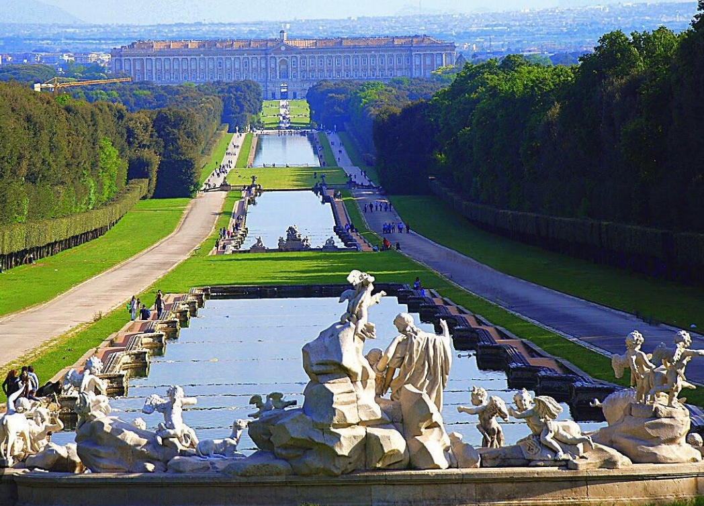
Construída para rivalizar com Versalhes, impressiona pela escala monumental, pelos salões barrocos e pelos quilômetros de jardins, fontes e perspectivas. É uma extensão de dia inteiro para quem busca arquitetura, paisagismo e história da monarquia Bourbon.

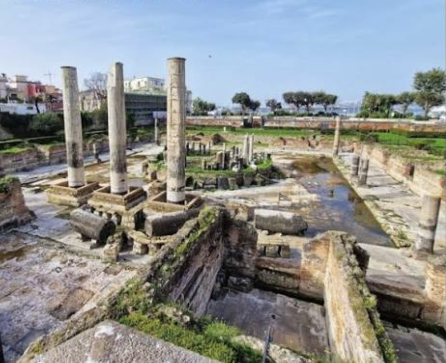
O Anfiteatro Flávio e o Macellum revelam uma Campânia menos óbvia, marcada pela engenharia romana e pelo movimento do solo vulcânico. Combine as ruínas com a orla e perceba como arqueologia, mar e geologia convivem no mesmo território.
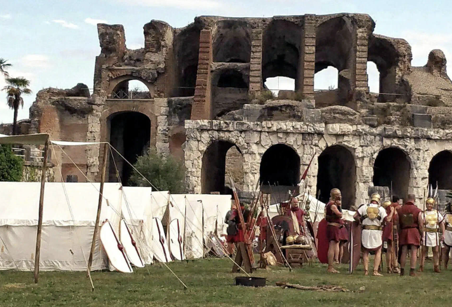
O Anfiteatro Campano, um dos maiores do Império Romano, preserva a memória da escola de gladiadores associada a Spartacus. É uma visita poderosa para compreender a dimensão política, militar e espetacular da antiga Campânia.
Pizza, massas, frituras, café e doces contam a história melhor do que qualquer lista genérica de “comida italiana”.
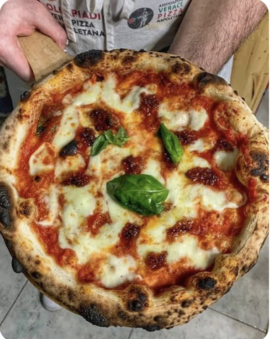
A síntese visual e gustativa de Nápoles.

Massa cremosa, empanada e frita.
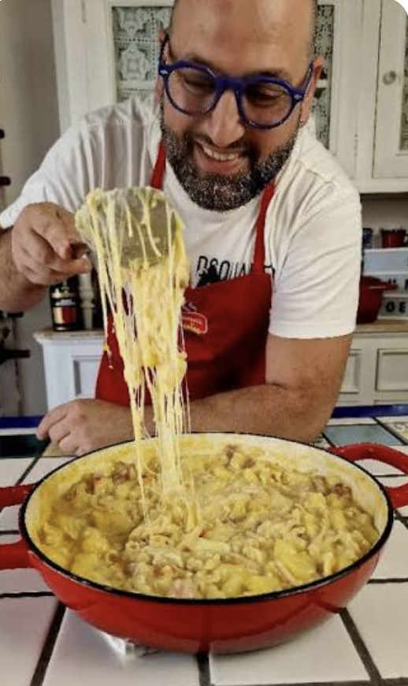
Textura reconfortante e identidade doméstica.
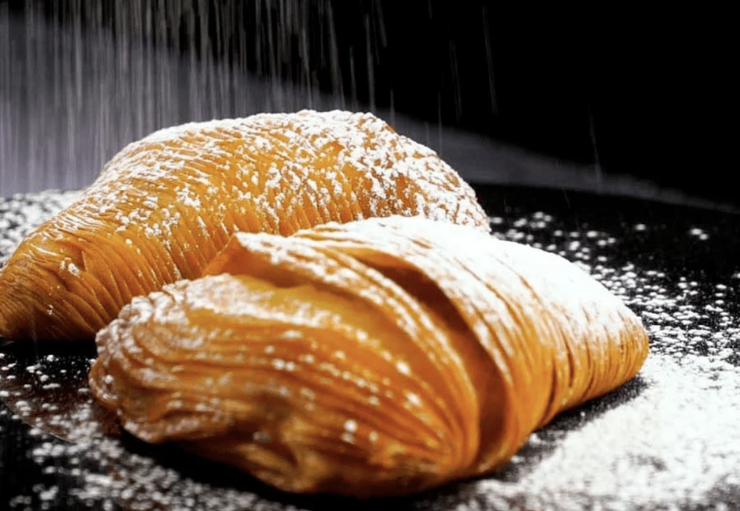
Camadas crocantes, ricota e perfume cítrico.
Em Nápoles, o que domina são gelatos densos, cremosos e feitos para destacar ingredientes locais.
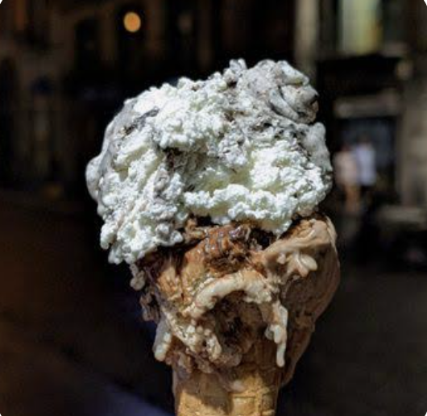
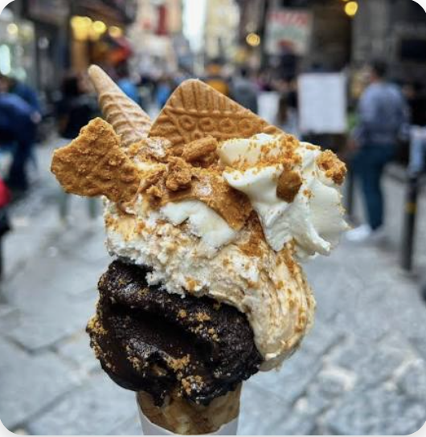
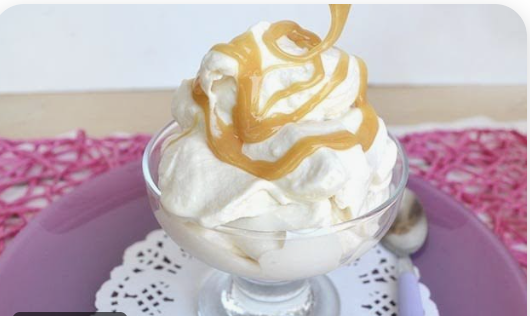
Nápoles e Pompeia formam o núcleo mínimo. Herculano e Capri ampliam a viagem sem transformar cada dia em uma corrida.
Free walking tour · Cappella Sansevero · Castel Nuovo · Napoli Sotterranea · noite no centro
Sair cedo · 4–6 horas de visita · retorno a Nápoles no fim da tarde
2–4 horas no sítio · retorno a Nápoles · Lungomare ou Santa Lucia
Primeiro ferry possível · Faraglioni · Anacapri · Capri town · volta programada
Napoli Centrale se conecta ao complexo de Garibaldi. Atenção aos nomes: metrô urbano, trens regionais e a rede EAV/Circumvesuviana são sistemas diferentes.
Linha 1 para Duomo, Università, Municipio e Toledo. Castel Nuovo fica junto à estação Municipio.
Linha Napoli–Sorrento, descendo em Pompei Scavi–Villa dei Misteri.
Circumvesuviana até Ercolano Scavi e pequena caminhada até a entrada.
Hidrofólios rápidos partem principalmente do Molo Beverello.
Trens regionais saem de Napoli Centrale e a Reggia fica em frente à estação.
A rota varia conforme o destino exato; confira a estação mais conveniente do dia.
Ele permanece sob as ruas, nas pedras de Pompeia e Herculano, nas torres do Maschio Angioino e na paisagem marítima que conduz até Capri.